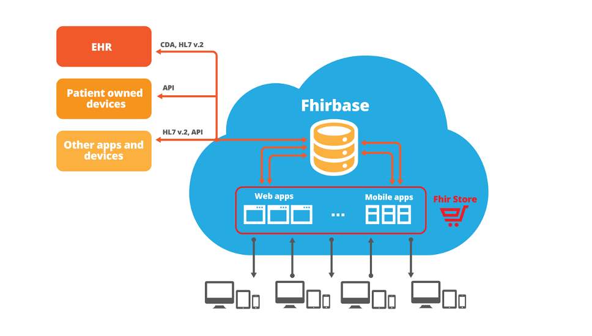

Our Core Values
- we value professionalism and education
- we like open source
- we are fanatics of quality and standards
- we are constantly improving our processes and technologies to solve more and more complex problems
What we've done
- MedClient - ONC certified cloud based Electronic Health Record system implemented in three hospitals in California
- Implementation of MedClient in Verdugo Hills Hospital
- fhirbase - is an open source stack for Health IT application development based on FHIR standard
Technical Stack
- Linux (operating system)
- PostgreSQL (open source database)
- Ruby & Ruby On Rails - efficient web development stack
- AngularJs - google open source MVVM framework for interactive front-end applications
- other front-end libraries: twitter bootstrap, d3, bower, node, npm, less, coffeescript etc
- Clojure, a perfect pragmatic choice between quick development, enterprise java infrastructure and formal academic power
- Chef, Vagrant & Sensu (for infrastructure as a code)
- Amazon AWS, a source of compute and storage power
Development methodologies
- agile development methods: backlog, scrum (meetings), pair programming, user stories etc
- Continuous Delivery
- Test Driven Development & Continuous Integration
- DevOps (infrastructure as a code)
- rapid prototyping
- lean customer development
Development Tools
- github - source control
- teamcity - continuous integration (deployment) server
- redmine - issue tracker
- selenium - web browser automated testing
- new relic - web traffic performance monitoring
- chef - infrastructure management
- sensu - monitoring
- balsamic, mind mapping and other tools for customer development, UX testing
etc
Security Measures
- AWS hosting is HIPAA compliant
- no protected health information (PHI) stored on local devices
- data-at-rest is encrypted, SSL encryption of data-in-transit
- biometric authentication of users when applicable
- comprehensive audit log and monitoring tools
- We educate our users. Security measures built into a product have to be supplemented by an organization culture and policies
Health Samurai offer
- Solve your interoperability problems (details)
- Substitute a miserable module within your EHR system with something you will love (details)
- Create an application targeting a large market which will supplement EHR systems from multiple vendors (details)
- Investment/partnership opportunity (details)
Solve your interoperability problems
Substitute a miserable module within your EHR system with something you will love
Create an application targeting a large market which will supplement EHR systems from multiple vendors
The problem we address
Current EHRs are huge monolithic systems with limited customization
and interoperability
Health Samurai solution
A platform (paas) and an app store with modern web and mobile applications built on top of the centralized FHIR server

Fast
Healthcare
Interoperability
Resources
... is the next generation standard
for exchanging healthcare information electronically
FHIR
- utilizes best practises and targets implementers and web technologies
- supports common scenarios but provides with documented extensibility
- freely available (CC0 license)
- great growing community
Expertise
Health Samurai is involved into the development of the FHIR standard and actively participates in the FHIR community
Experience
- Health Samurai has built MedClient for Choice Hospital Systems - ONC certified cloud based EHR implemented in three hospitals in California: Verdugo Hills Hospital, Good Samaritan Hospital in Bakersfield and Tahoe Forest Hospital.
- Implementation in Verdugo Hills Hospital has been completed by Health Samurai.
Why Health Samurai can deliver it better than others?
Why Health Samurai can deliver it better than others?
Why Health Samurai can deliver it better than others?
FHIRbase
... is an open source stack for
Health IT application development based on FHIR standard
fhirbase storage
- stores resources relationally and provides with the power of SQL for querying & aggregating
- provides with a set of procedures & views to persist and retrieve resources as json documents